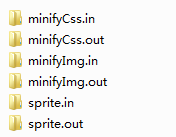

基础工具
在Yummy文件夹下有个tools文件夹，目前里面存放有三组工具集：

对应的功能分别是：
- 压缩CSS（minifyCss.in minifyCss.out）
- 压缩图片（minifyImg.in minifyImg.out）
- 合并图片（sprite.in sprite.out）
文件夹.in相关的是存放原资源，文件夹.out相关的是处理输出后的资源，它们存在的意义就是可以在平时的工作中被当作一种工具来处理一些事情。
工具命令
压缩CSS
gulp minifyCss
压缩图片
gulp minifyImg
合并图片
gulp sprite